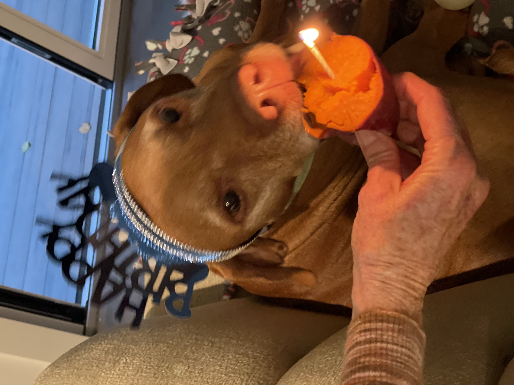

His record is an 8 foot long stick.
After this outing, he will take one of several naps throughout the day, in one of his several dog beds, my bed, my parents' bed, the couch, on top of one of us, or anywhere else he can find.
After his nap, he'll do one of the following:
One special thing that Thai will often do is eat absolutely anything in sight. Thai is quite a big dog, he's 70 pounds and is about 5 feet tall when standing on his hind legs. Therefore, he can jump on top of most of the high surfaces in our house, especially those where we store food. He's eaten entire sticks of butter, whole chicken dishes, even two full trays of brownies I meant to deliver to my friend. He was fine though, he has so much body mass that it would take a lot of chocolate to hurt him.
After his nap and whatever snack he finds on the counter, we will go on another hour and a half long walk, and then come home and reminisce on photos of him as a puppy.
After another long, hard day, promptly at 9pm he will crawl into bed and lay his head on the pillow like a human, despite his multitude of dog beds strewn around the house.
If you would like to see more photos of Thai, you can email me or check out my instagram.